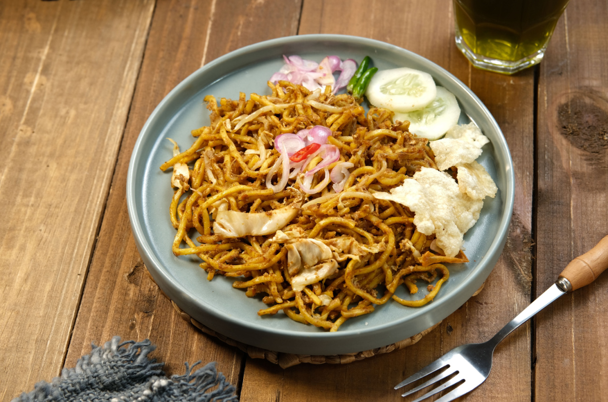

Pendahuluan
Kota Binjai, yang terletak di provinsi Sumatera Utara, memiliki berbagai macam kuliner khas yang lezat dan unik.
Dari makanan tradisional hingga jajanan pasar, Binjai menawarkan pengalaman kuliner yang tak terlupakan bagi para pecinta makanan.
Berikut ini beberapa kuliner yang wajib dicoba saat berkunjung ke Binjai.
Berikut adalah beberapa kuliner yang saya rekomenadikan, dari banyaknya makanan.
1. Keripik Tempe
Keripik tempe adalah salah satu camilan populer di Binjai. Terbuat dari tempe yang diiris tipis-tipis dan digoreng hingga renyah, keripik tempe ini sering dijadikan oleh-oleh khas dari Binjai.
2. Bika Ambon
Bika Ambon adalah kue tradisional yang memiliki tekstur lembut dan berserat.
Meskipun namanya Ambon, kue ini sebenarnya berasal dari Sumatera Utara.
Bika Ambon sangat populer di Binjai dan sering ditemukan di pasar-pasar tradisional.
3. Soto Medan

Soto Medan adalah hidangan sup yang kaya rasa dengan kuah santan kental yang disajikan dengan daging ayam atau sapi, telur rebus, dan bihun.
Hidangan ini sangat populer di Binjai dan menjadi pilihan utama bagi para pecinta kuliner.
4. Durian Binjai
Durian Binjai terkenal dengan rasa yang manis dan aroma yang khas.
Durian ini sering kali dijadikan bahan dasar untuk berbagai macam olahan seperti es durian, pancake durian, dan lainnya.
Jangan lewatkan kesempatan untuk mencicipi durian Binjai yang legendaris ini.
5. Lontong Medan
Lontong Medan adalah makanan khas yang terdiri dari lontong, sayur, tauco, dan sambal teri.
Kombinasi rasa yang gurih dan pedas membuatnya sangat digemari oleh warga Binjai dan sekitarnya.
6. Bolu Meranti
Bolu Meranti adalah kue bolu gulung yang terkenal dengan berbagai pilihan rasa seperti keju, cokelat, dan nanas.
Bolu ini menjadi oleh-oleh wajib saat berkunjung ke Binjai.
7. Mie Aceh

Mie Aceh adalah mie yang dimasak dengan bumbu rempah-rempah yang kuat, disajikan dengan daging sapi atau seafood.
Rasanya yang pedas dan kaya akan bumbu membuatnya populer di Binjai.
8. Lemang
Lemang adalah makanan tradisional yang terbuat dari beras ketan dan santan yang dimasak dalam bambu.
Disajikan dengan selai atau rendang.
9. Bolu Gulung
Bolu Gulung adalah kue yang lembut dan manis dengan beragam isian, seperti selai, keju, atau cokelat, yang digulung rapi.
10. Nasi Lemak
Nasi lemak adalah hidangan nasi yang dimasak dengan santan, disajikan dengan sambal, ikan bilis, kacang tanah, telur rebus, dan timun.
Di Binjai, nasi lemak menjadi sarapan favorit masyarakat.
11. Dodol Binjai
Dodol Binjai adalah makanan manis yang terbuat dari ketan, gula, dan santan.
Rasanya manis dan teksturnya kenyal, menjadi oleh-oleh khas dari Binjai.
12. Mie Balap
Mie Balap adalah hidangan mie khas Binjai yang diolah dengan cepat (balap), menggunakan bumbu sederhana namun memiliki cita rasa yang khas.
Biasanya disajikan dengan telur, sayuran, dan daging ayam atau seafood.
13. Jengkol Balado

Jengkol balado adalah makanan yang diolah dari jengkol dengan bumbu balado khas Sumatera Utara.
Rasa pedas dan gurihnya menjadikan jengkol balado sebagai salah satu makanan favorit di Binjai.
14. Es Campur Kalimantan
Cendol, tapai, lengkong, kacang merah, kedelai, gula merah, santan dan campuran es serut.
Cocok banget dinikmati siang hari saat cuaca sedang terik-teriknya.
Selain makanan kuliner diatas, anda juga bisa berkunjung ke tempat/resto kuliner disekitar binjai.
Berikut adalah beberapa tempat/resto yang bisa anda kunjungi:
2. Kampung Kuliner

Kuliner menjadi tujuan kulineran di kota ini yang bisa Anda kunjungi selanjutnya.
Tempat satu ini kondang di kalangan kawula muda sebagai tempat nongkrong yang kekinian.
Sehingga tempat satu ini tidak hanya cocok untuk kulineran, tetapi juga untuk mengobrol bersama teman.
Apalagi tempatnya berada di lokasi yang strategis dan mudah dijangkau.
Di Kampung Kuliner, setidaknya Anda bisa menemukan 7 sampai 10 stand menjual berbagai kuliner khas Binjai.
Dengan begitu Anda tak perlu bingung ingin menikmati makanan apa, karena banyak menu yang ditawarkan.
Suasananya yang nyaman juga mendukung mengapa tempat satu ini menjadi andalan. Harga yang ditawarkan pada menu makanannya juga masih terbilang aman untuk kantong.
Bagi Anda yang ingin sekalian memperbarui galeri anda, Anda juga bisa mengambil beberapa foto yang kekinian.
Di kampung Kuliner, dihiasi dengan berbagai dekorasi yang akan mendukung pose Anda. Lampu lampu hias akan menyala cantik.
Terutama saat malam sudah datang. Pastikan Anda tak melewatkan tempat satu ini saat sedang singgah di Binjai.
Lokasi Jl. Medan, Tanah Tinggi, Kecamtan Binjai Timur, Kota Binjai, Sumatera Utara
3. Pondok Jati Resto
Anda bisa menjadikan Pondok Jati Resto sebagai tujuan kuliner.
Tempat makan satu ini tidak hanya terkenal tetapi juga menawarkan banyak menu makanan lezat.
Dengan tempat yang akan membuat siapapun merasa nyaman.
Salah satu menu andalan di tempat kulineran ini adalah olahan ayamnya, digoreng maupun dibakar.
Untuk menemani olahan ayamnya, Pondok Jati Resto akan menyandingkan dengan sambal pedas yang nikmat.
Selain menu ayam, Anda juga bisa menemukan menu lain yang tak kalah nikmat.
Disandingkan dengan lalapan juga nasi hangat pasti akan membuat ketagihan.
Pondok Jati Resto terkenal akan harganya yang terjangkau dan rasa masakannya yang nikmat.
Lokasi Jl. Teluk Betung Belitung No.2, Kecamatan Binjai Selatan, Kota Binjai, Sumatera Utara.
4. Binjai Supermall
Untuk membuat perjalanan rasa Anda semakin beragam, Anda bisa menjadikan Binjai Supermall tujuan wisata kuliner.
Bisa dikatakan jika mall kekinian satu ini menjadi destinasi berburu kuliner yang hits.
Hal ini dikarenakan Anda bisa menemukan banyak stand makanan juga restoran yang menjual kuliner beragam, Anda bisa mudah menyesuaikan dengan selera.
Mulai dari restoran yang menjual aneka menu khas Binjai, olahan china hingga seafood bisa Anda temukan dengan mudah.
Anda juga bisa mencicipi udang goreng crispy yang menjadi andalan di Binjai Supermall ini .
Tidak hanya udang, Anda juga bisa menemukan olahan ayam yang tak kalah nikmat. Kuliner tradisional hingga yang kekinian bisa Anda temukan di mall satu ini.
Lokasi Jl. Soekarno- Hatta No.14, Timbang Langkat, Kecamatan Binjai Timur, Kota Binjai, Sumatera Utara.
5. Sari Rasa
Satu lagi tempat makan enak di Binjai yang harus kamu singgahi, yakni Sari Rasa. Menunya cukup beragam.
Mulai dari ayam, ikan, seafood, sayuran, sate hingga camilan, semuanya menggugah selera.
Di sini menunya halal, harganya pun tidak mahal. Menu ayamnya ada pilihan ayam bakar, ayam geprek, dan ayam kremes Sari Rasa.
Aneka menu ikan yang tersedia di resto ini ada ikan gurami, kembung, kakap, patin, dan nila.
Penggemar seafood bisa memilih udang asam manis, lobster lada hitam, kepiting saus Padang, kerang rebus, dan cumi saus tiram.
Lauk sayurnya ada kangkung dan sayur asam. Jangan lupa cobain jengkol rendangnya.
Sambal di Sari Rasa menggunakan cabai kualitas terbaik yang didatangkan dari aceh.
Rasa sambalnya cukup pedas. Jadi buat yang tidak bisa makan pedas, ambil sambalnya sedikit saja, ya.Â
Alamat: Jalan Sultan Hasanuddin Nomor 88F, dekat kesrem tentara, Binjai, Sumatra Utara